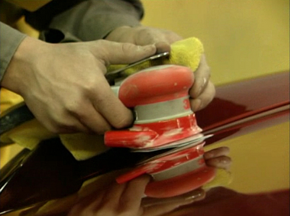
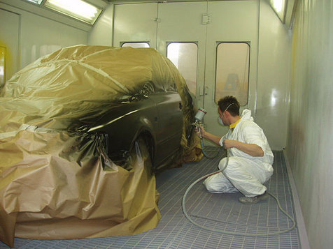
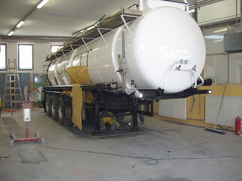

Avtokleparstvo in avtoličarstvo · Kamnik
Po nesreči uredite vse na enem mestu.
Cenitev vozila, zavarovalniški postopek, popravilo karoserije in laka ter nadomestno vozilo za čas popravila. Družinska delavnica v Podjelšah, od leta 1985.
Kako poteka škodni primer
Pri nas stranke uredijo vse potrebne formalnosti za škodni dogodek na enem mestu.
Cenitev in prijava
Vozilo si ogledamo, pripravimo cenitev in pomagamo pri zavarovalniškem postopku.
Popravilo v lastni delavnici
Kleparska in ličarska dela v sodobno opremljeni delavnici z lastno mešalnico barv in lakirno komoro.
Nadomestno vozilo
Med popravilom vam zagotovimo urejeno in redno vzdrževano nadomestno vozilo.
Storitve
Za osebna in gospodarska vozila. Pri karoserijskih popravilih uporabljamo preverjene materiale in sledimo smernicam v panogi.
Karoserija in lak
- Avtokleparstvo in avtoličarstvoPosledice prometnih nesreč, toče ali obrabe.
- Mešalnica barvVodne barve, sistemi DuPont, PPG, Standox in Mipa, prilagojeni originalnemu odtenku.
- Popravilo toče brez lakiranjaOhranimo originalni lak vozila.
- Popravilo poškodovane plastikeLepljenje, varjenje, zalivanje; celotno ali delno ličanje odbijača.
- Zaščita podvozjaProtikorozijski premazi podvozja, pragov in votlih delov.
- PlatiščaPopravilo, zaščita in lakiranje aluminijastih in jeklenih platišč.
Dodatne storitve
- Menjava vetrobranskega steklaNa vseh vrstah vozil; manjše poškodbe popravimo brez menjave.
- Obnova žarometovPoliranje odstrani porumenelost in motnost.
- Nega vozilaPoliranje, ročno pranje, globinsko čiščenje notranjosti.
- Priprava avta za prodajoČiščenje, poliranje in popravilo manjših prask.
- Hitri servis osebnih vozilOptika vozil in priprava na tehnični pregled.
- Restavriranje starodobnikovCelovita obnova od karoserije do barve in notranjosti.



Tovorni program
Avtoličarska in avtokleparska dela opravljamo tudi na tovornih in gospodarskih vozilih: od kombijev do vlačilcev in cistern.

Družinsko podjetje iz Podjelš
Obrt je leta 1985 odprl Dušan Papež. Danes podjetje vodi hči Nina, ekipo pa sestavljajo izkušeni strokovnjaki in vajenci.
- 1985Dušan Papež odpre Avtoličarstvo Papež Dušan s.p.
- 2008Vodenje prevzame hči Nina.
- 2024Preoblikovanje v Avtoličarstvo, avtokleparstvo Papež d.o.o.
- 202540 let delovanja.
Kontakt
Avtoličarstvo, avtokleparstvo Papež d.o.o.Podjelše 2, 1241 Kamnik
Zemljevid (OpenStreetMap)
031 683 016
info@avtolicarstvo-papez.si
Delovni čas
| Ponedeljek - petek | 7.00 - 17.00 oz. po dogovoru |
| Sobota | po dogovoru |
| Nedelja in prazniki | zaprto |